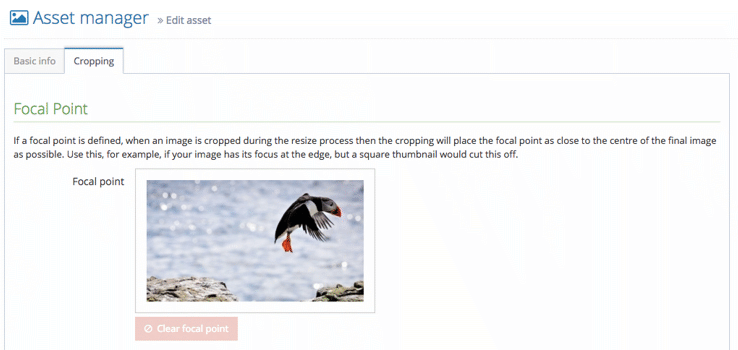
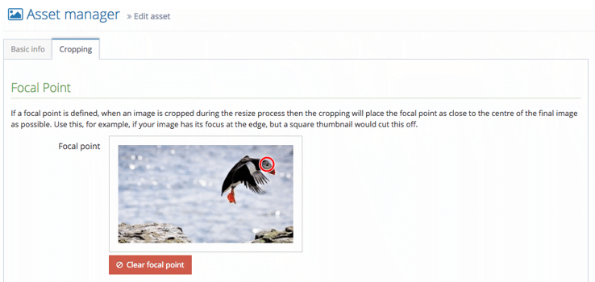
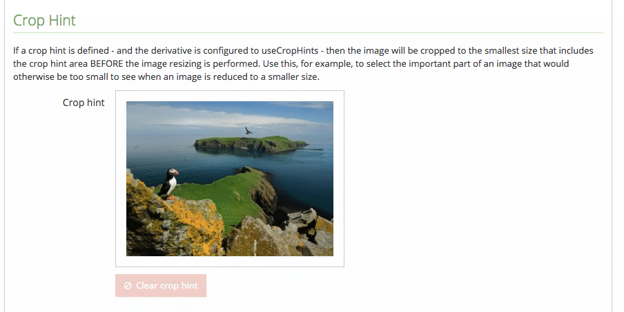
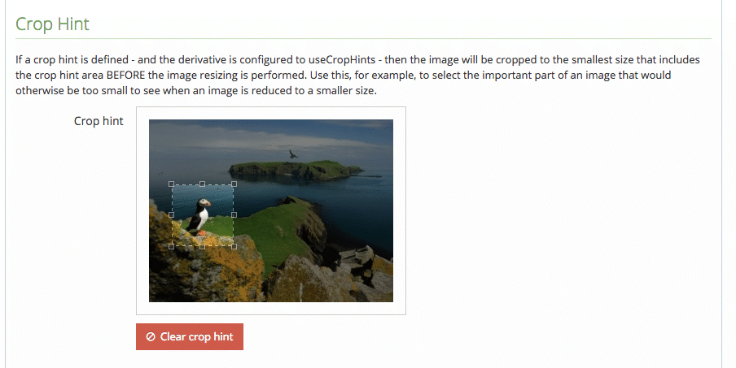

Seb Duggan
adminThumbnailpickerIconwidth and height argumentsquality (defaults to "highPerformance")pageThumbnail is one of Preside’s built-in derivatives:
settings.assetManager.derivatives.pageThumbnail = {permissions = "inherit", transformations = [ {method = "shrinkToFit", args = { width=100, height=100 }} ]};
width and/or height argumentsquality (defaults to "highPerformance")maintainAspectRatio (defaults to false)settings.assetManager.derivatives.width300 = {permissions = "inherit", transformations = [ {method = "resize", args = { width=300 }} ]};
settings.assetManager.derivatives.square300 = {permissions = "inherit", transformations = [ {method = "resize", args = { width=300, height=300 }} ]};
settings.assetManager.derivatives.square300 = {permissions = "inherit", transformations = [ {method = "resize", args = {width = 300, height = 300, maintainAspectRatio = true}} ]};
Method 1: use event.buildLink()
imageUrl = event.buildLink(assetId = "...", derivative = "bannerImage");
derivative will return the original imageMethod 2: use renderAsset()
renderedImage = renderAsset(assetId = "...", args = { derivative="bannerImage" });
Method 2: use renderAsset()
renderedImage = renderAsset(assetId = "...", args = {derivative = "bannerImage", class = "customClass", label = "Image description"});
<img> tagrenderAsset() uses the default renderer for the file type, e.g. renderers.asset.image.defaultrenderers.asset.jpg.defaultrenderedImage = renderAsset(assetId = "...", context = "banner");
If context is "banner", a JPEG image asset would be rendered using the first of these that is available:
/application/views/renderers/asset/image/banner.cfm
<cfscript>id = args.id ?: "";label = args.label ?: "";imageUrl = event.buildLink(assetId = id, derivative = "bannerImage");</cfscript><cfoutput><div class="banner-image"><img src="#imageUrl#" alt="#label#" title="#label#" /></div></cfoutput>
Take this image as an example:
Resized using our 300x300 derivative:
How about a 650x200 banner derivative?
Previous options for dealing with this:
Introduced in Preside 10.9
Introduced in Preside 10.9
Now our square crop will produce this:
...and our banner derivative:
Here is another sample image:
Resized as a 100x100 thumbnail:
Introduced in Preside 10.9
Introduced in Preside 10.9
Simply tell your derivative to use crop hints:
settings.assetManager.derivatives.croppedThumbnail = {permissions = "inherit", transformations = [ {method = "resize", args = {width = 100, height = 100, useCropHint = true}} ]};
Now our thumbnail will look like this:
Crop hints are also useful for cropping portraits:
Crop hints are also useful for cropping portraits:
Crop hints are also useful for cropping portraits:
img.avatar {border-radius : 50%;}
<img srcset="..."><picture/><picture><source srcset="large.jpg" media="(min-width: 901px)"><source srcset="medium.jpg" media="(min-width: 600px)"><source srcset="small.jpg"><img src="medium.jpg" alt="..."></picture>
srcset can include multiple resolutions<img> content if not supported